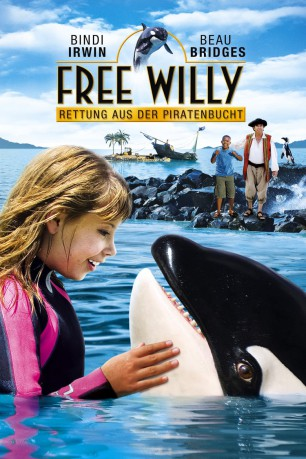
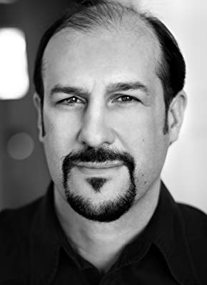
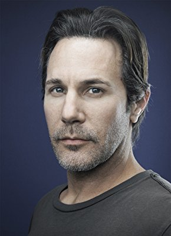

#10518 Free Willy 4 - Rettung aus der Piratenbucht
Alternativ: Free Willy: Escape from Pirate's Cove (Englischer Titel)
 
 IMDB-Wertung: 5.3 / 10
IMDB-Wertung: 5.3 / 10  Metascore: 0
Metascore: 0 
Die junge Kirra verlässt ihre australische Heimat, um einen Sommer bei ihrem Großvater in Südafrika zu verbringen. Schon kurz nach ihrer Ankunft entdeckt sie ein gestrandetes Orca-Baby in einer Lagune, unweit des heruntergekommenen Freizeitparks ihres Großvaters. Sie nennt ihren neuen Freund Willy und setzt alles daran, den Wal zu seiner Herde zurückzuführen, bevor der habgieriger Rival ihres Großvaters ihn als Geldmaschine seines Vergnügungsparks missbraucht.
Jahr: 2010
Dauer: 93 Minuten
FSK:
Land: USA Studio: Argentina Video HomeTonspuren:
Untertitel:
Auflösung: 1080p (1920x1080) Größe: 6072 MB
Genre: Drama, Abenteuer, Familie
Regisseur: Will Geiger
Drehbuch: Will Geiger, Cindy McCreery, Keith Walker
Soundtrack: Enis Rotthoff
Darsteller:
- Bindi Irwin als Kirra
 Beau Bridges als Gus Grisby
Beau Bridges als Gus Grisby-  Matthew Dylan Roberts als Blikkie
-  Darron Meyer als Doctor
- Jeanne Neilson als Airport Hostess
- Robert Clarence Irwin als Pirate Boy (uncredited)
- Bongolethu Mbutuma als Mansa
- Siyabulela Ramba als Sifiso
- Stephen Jennings als Rolf V.D. Woods
- Hiema Jaffa als Jayce
- Kevin Otto als Dr. Sam Cooper
- Louw Venter als Diff
- Julie Hartley als Woman - Wallaby
- Sue Dall als Female Customer
- Sofie Schmidt als Whale Watching Girl
- Matthew Kennedy als Kid - Kelp
- Shiloh Henderson als Kid 2 - Kelp
- Michelle Scott als Mom - Kelp
- Bruce Young als Male Marine Biologist
- Claire Berlein als Female Marine Biologies
- Getmore Sithole als Uncle Rudy
- Mfundo Tshazibane als Groundskeeper
- Robert Spencer als Nerdy Boy
- Tracy Kitching als Waitress
- Rosco Charles als Teenage Putt-Putter
- Chumani Pan als Gate Guard
- Linda Mpondo als Policeman
Datei: X:\4-Tetralogie(A-K)\Free Willy\Free Willy\Free Willy 4 - Rettung aus der Piratenbucht (2010, FSK, 1920x1080).mkv seit 18.01.2019
Festplatte: HD Collection-3(N-Z)-6(A-Z)
 Alle Filme aus Gruppe '4-Tetralogie(A-K)\Free Willy\Free Willy'
Alle Filme aus Gruppe '4-Tetralogie(A-K)\Free Willy\Free Willy'
- Free Willy 4 - Rettung aus der Piratenbucht (der aktuelle Film)